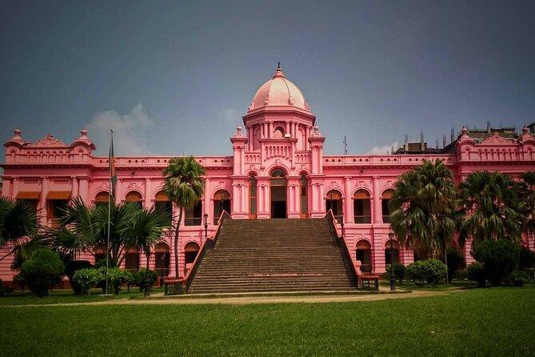

Beauty of Bangladesh
1971 - 2025
Dhaka Heritage & Cultural
Get a comprehensive tour of Dhaka combined with personalized attention on this private excursion. You and your party will be able to move at your own pace through the old town in Dhaka, listening to commentary on the city's history and culture. A local lunch, a rickshaw ride, and a traditional wooden boat ride are included.
Biographies
- Dhaka is the capital and largest city of Bangladesh. With its colorful history and rich cultural traditions, Dhaka is known the world over as the city of mosques and muslin. Its fame attracted travelers from far and near throughout the ages. Today it has grown into a mega city of about 8.5 million people, with an area of about 1353 sq. km. becoming the hub of the nation's industrial, commercial, cultural, educational and political activities.
- Dhaka is located in the geographic center of the country. It is in the great deltaic region of the Ganges and Brahmaputra rivers. The city is within the monsoon climate zone, with an annual average temperature of 25 deg C (77 deg F) and monthly means varying between 18 deg C (64 deg F) in January and 29 deg C (84 deg F) in August. Nearly 80% of the annual average rainfall of 1,854 mm (73 in) occurs between May and September.
- Dhaka is located in one of the world's leading rice and jute or natural rawjute growing regions. Its include jute textile industries, muslin and cotton industries and also food processing, especially rice milling. A variety of other consumer goods are also manufactured here. The Muslim influence is reflected in the more than 700 mosques and historic buildings found throughout the city. The University of Dhaka (1921) and several technical schools and museums are located here.
- Ahsan Manzil Museum : On the bank of the river Buriganga in Dhaka the pink majestic Ahsan Manzil has been renovated and turned into a museum recently. It is an example of the nations rich cultural heritage. It was the home of the Nawab of Dhaka and a silent spectator to many events. The renovated Ahsan Manzil is a monument of immense historical beauty. It has 31 rooms with a huge dome atop which can be seen from miles around. It now has 23 galleries displaying portraits, furniture and household articles and utensils used by the Nawab.
- Lalbagh Fort : It was built in 1678 A.D. by Prince Mohammad Azam, son of Mughal emperor Aurangazeb. The fort was the scene of bloody battle during the first war of independence (1857) when 260 sepoys stationed here backed by the people revolted against British forces. Outstanding among the monuments of the Lalbagh are the tomb of Pari Bibi , Lalbagh Mosque, Audience Hall and Hammam of Nawab Shaista Khan now housing a museum.
- Central Shahid Minar : Symbol of Bengali nationalism. This monument was built to commemorate the martyrs of the historic Language movement of 1952. Hundreds and thousands of people with floral wreaths and bouquet gather on 21 February every year to pay respect in a solemn atmosphere. Celebrations begin at zero hour of midnight.
- Parliament House : Jatiya Sangsad Bhaban (Parliament House) located at Sher-e-Bangla Nagar has distinctive architectural features. Designed by the famous architect Louis I. Kahn, it may be called an architectural wonder of this region.
- Picnic Spots : There are good picnic spots in the area around Savar and Mirzapur. Other beauty spots connected by road with Dhaka include Joydevpur, Sripur, Madhupur, Rajendrapur National Park, Chandra and Salna, all of which have rest-houses that can be used by tourists on request to the Forest Department.